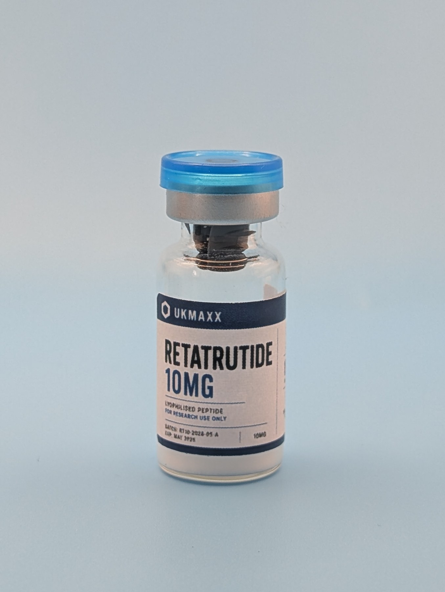

Retatrutide 10mg: assay, purity and batch verification.
A 10mg label is a claim. This guide preserves the evidence trail for sold-through UKMAXX batch RT10-2026-06-A: its measured content, purity result and original Janoshik record.

Sold-through batch RT10-2026-06-A remains linked to its 10.12mg assay, 99.223% purity result and original Janoshik record. The public batch checker preserves the original 29-vial batch size and archived release status.
What is being verified?
Retatrutide is a multi-receptor research peptide studied across GIP, GLP-1 and glucagon receptor pathway models. This page is not a dosing or human-use guide. Its purpose is narrower: to preserve how a completed UKMAXX 10mg release connects to a specific batch and independently published analytical result.
What do RT10, RT 10mg and Reta 10mg mean?
RT10 is the UKMAXX product code for the Retatrutide 10mg single-vial listing. RT 10mg, RT10mg and Reta 10mg are shorthand for the same stated strength; they are not separate UKMAXX compounds or batches. Current availability and restock status remain on the RT10 product page.
Retatrutide 10mg assay and purity result
For batch RT10-2026-06-A, Janoshik Analytical reported 10.12mg measured Retatrutide content and 99.223% purity using its Common GLP-1 peptide blind test, analysed by HPLC. The two results answer different questions and should be read together.
The assay reports the measured amount of target material in the analysed sample. Purity describes the proportion of detected material represented by the target compound. Publishing both gives a fuller view than presenting a purity percentage alone.
How the RT10 batch is traced
Batch verification only works when the same identifier connects supplied stock to laboratory evidence. For this completed release, that identifier is RT10-2026-06-A.
The batch began with a published size of 29 vials. Its public batch record now preserves the sold-through status and original batch size. The linked Janoshik report remains the primary analytical source.
Sold-through status and the next release
Batch RT10-2026-06-A has sold through. Its product page now provides a restock alert rather than an active purchase control, while the previous analytical record remains public.
Current Retatrutide availability is shown separately on the RT20 product page. Use the UKMAXX COA and batch checker to distinguish active, archived and rejected batch records.
Retatrutide 10mg FAQ
What does RT10 mean?
RT10 is the UKMAXX product code used for Retatrutide 10mg.
Is the batch independently tested?
Yes. The sold-through RT10 batch remains linked to its published Janoshik Analytical COA record.
What did the Retatrutide assay measure?
Janoshik Analytical reported 10.12mg measured Retatrutide content for batch RT10-2026-06-A, alongside 99.223% purity.
Are assay and purity the same result?
No. Assay reports measured target content, while purity describes how much of the detected material was represented by the target compound in the analysed sample.
Do you provide dosing advice?
No. UKMAXX does not provide dosing, human-use or medical advice. Products are supplied strictly for laboratory and in-vitro research use only.